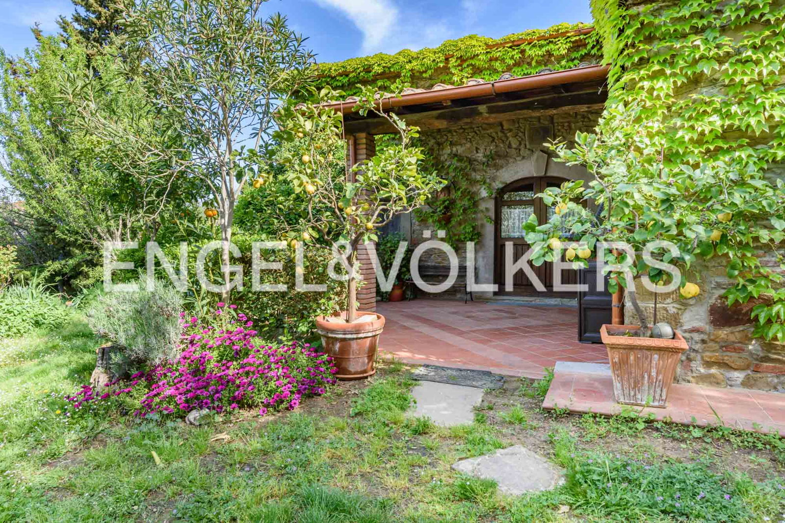

€550.000
Porciano / Lamporecchio, Tuscany
Open the listingMontalbano farmhouse with rustic charm mixed with modern comfort, fireplace living and a panoramic private pool as the jewel of the property — restored-with-pool bargain at €550k.
Opened 6 Sep 2026 via E&V expose __NEXT_DATA__ + JSON-LD Offer.price. salesPrice €550000. 3 bed / 2 bath / ~225 m² / plot 20000. hasSwimmingPool=True. condition=None. Shop=Florence. UUID deduped against board /it/it and /it/en exposes + existing refs.